渗透技巧 | 查找网站后台方法总结整理
本文由内部学员<楼上的人看楼下的风景>
原创投稿
文章首发于T00ls社区
想必大家在在信息收集的时候，都和我一样有着这样的烦恼。我们常常对网站后台地址找不到而烦恼不断。下面是小编总结查找网站后台的常见方法，希望能够对大家带来帮助。话不多说，先来个思维导图送给大家。

针对网站后台的查找，我大致分成了两部分。一是针对当前站点页面进行查找，即网站后台是在这个站点页面当中的。另一部分则是后台放置其他站点页面，需要我们另外进行测试寻找。因为思维导图内容较多，我会抽取一部分进行说明，不会一一进行列举。
那么问题来了，我们应当如何去寻找一个网站后台呢？当我们进入到一个网站主页时，想进行对其后台的查找时，我们就可以先随意查看和点击当前网站的页面，浏览下网站的大体页面结构，说不定往往会有很多意想不到的收获哟。
一、当前页面信息浏览
1.1 查看图片的相关属性
当进入网站后，我们可以先随意点击下几张图片的属性，看看它们的文件路径是否可以加以利用。因为有些旧网站会直接把编辑器放在后台目录后面，所有当我们查看图片属性的时候会将网站路径上传点暴露出来。
1.2 查看网站底部管理入口和版权信息
其次，我们可以查看网站页面底部和网站版权信息，看看会不会有网站后台入口和版权网站信息。如果有网站后台入口，我们可以直接登登陆进去。而版权网站信息则我们可以让我们上网浏览它的建站规则。而这些底部网站后台入口往往在学校和政府网站比较多。
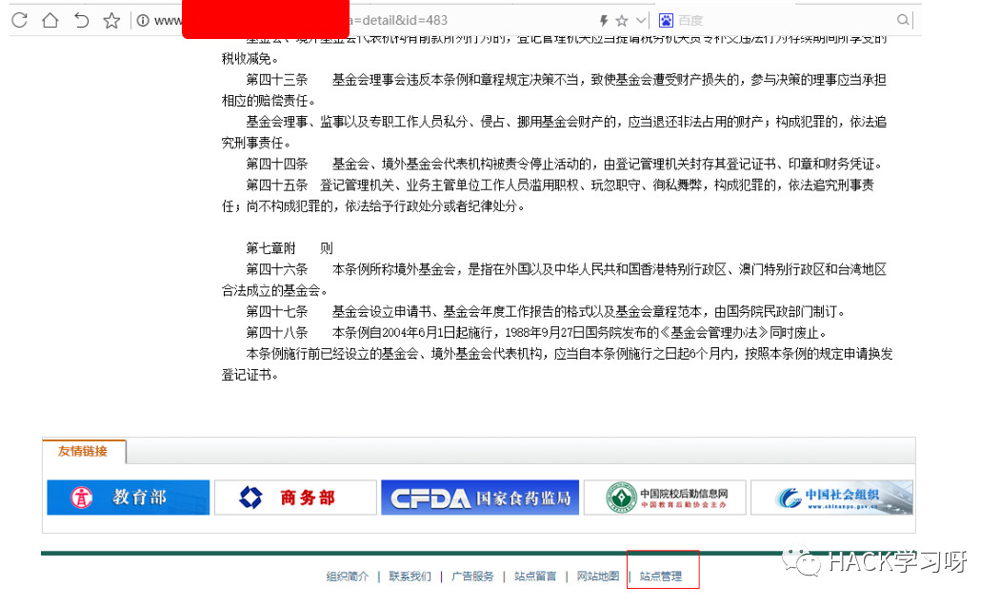
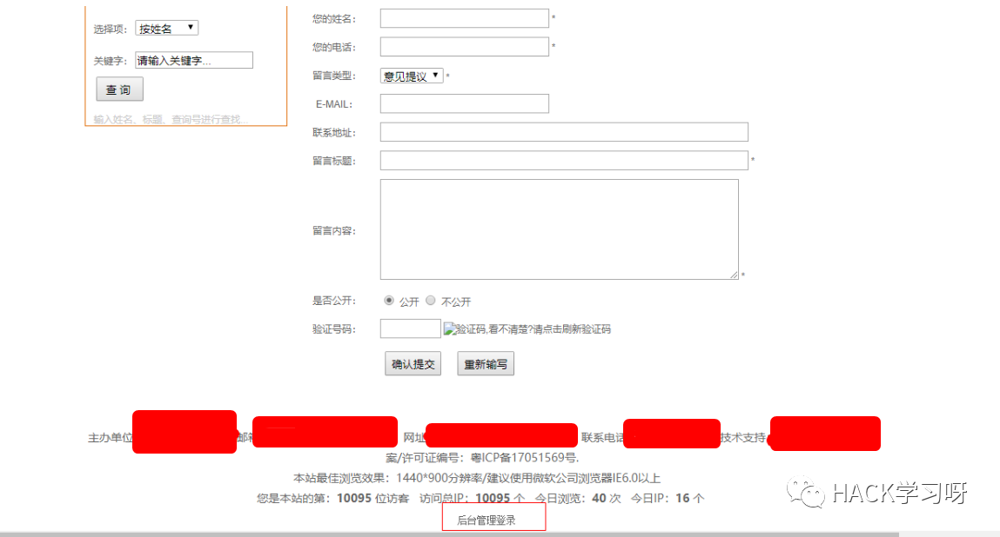
1.3 robots文件
robots.txt是一种存放于网站根目录下的ASCII编码的文本文件，它通常告诉网络搜索引擎的漫游器（又称网络蜘蛛），此网站中的哪些内容是不能被搜索引擎获取的，哪些是可以被获取的。我们可以在网站根目录下加上**/robots.txt**，说不定管理员不想被搜索引擎找到，把网站后台地址放置在里面。
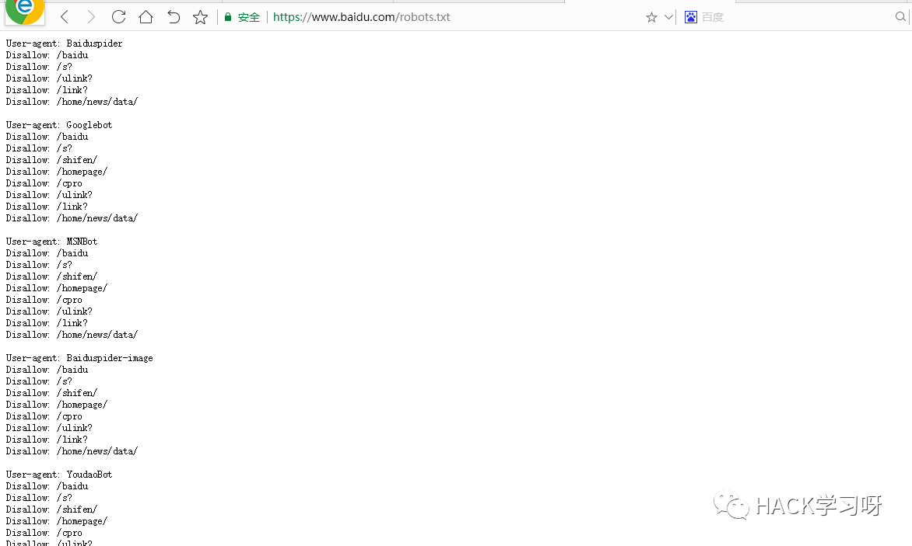
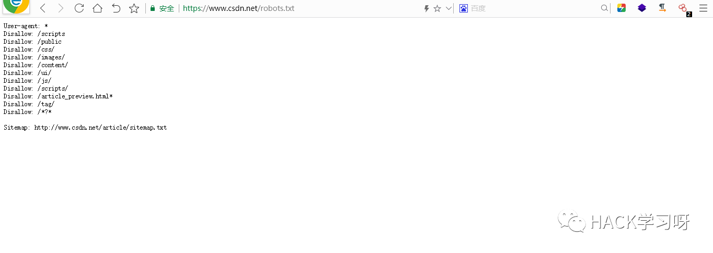
1.4故意请求不存在的页面
当我们尝试不能直接浏览网页找到后台时，我们可以尝试下故意请求不存在的页面，让网页故意显示报错信息，查看网站真实路径，说不定借此作为突破口，可以得到我们想要的后台地址信息。
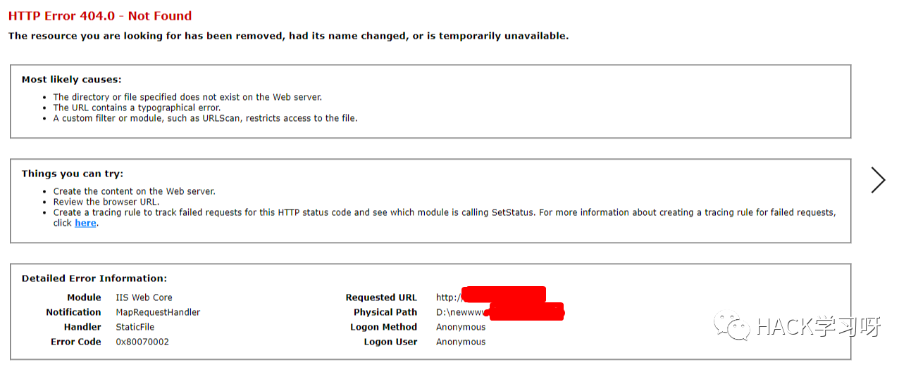
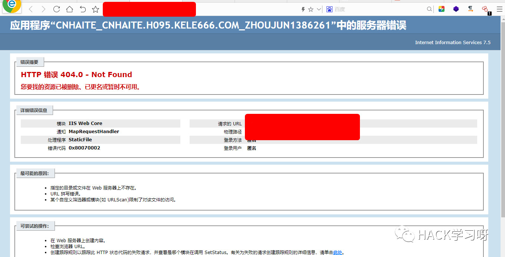
二、当前页面后台猜解
当我们对浏览当前页面后无法直接找到后台地址时，我们应针对它页面后台地址下手，对网站后台地址进行一些猜解和信息收集，进一步去寻找网站后台地址。
2.1 CMS指纹识别
CMS的全称为”Content Management System”的，意为”内容管理系统”。CMS只需要修改几个静态模版，就可以当成一个门户级网站使用。我们通过这以下几个在线网站和小插件来帮助我们进行CMS识别 。
在线CMS指纹识别 ：
http://whatweb.bugscaner.com/look/
云悉识别：
http://www.yunsee.cn/
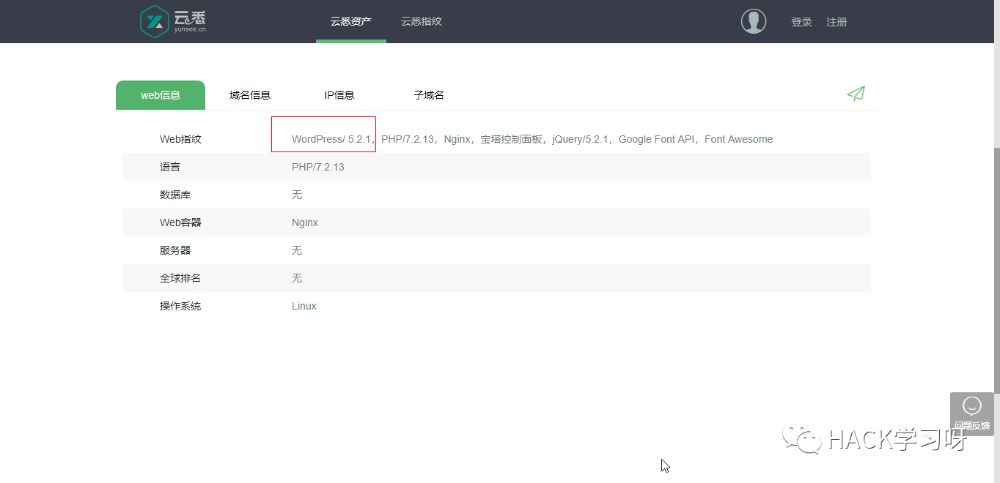
Wapplyzer插件使用
Wappalyzer 插件是一个可以用来检测内容管理系统（CMS），电子商务平台、Web服务器、JavaScript框架和已安装的分析工具。
下载地址：https://github.com/AliasIO/Wappalyzer
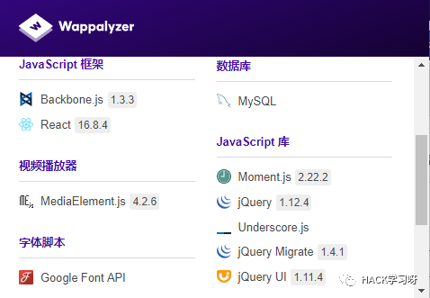
2.2 猜解常见后台路径
接着当我们查询到CMS默认后台地址进不去时，我们可以换着试试一些常见的网站后台路径。比如：admin、admin/login、admin_login、admin/admin_login 、 manage、 manage/admin_login、system等等。不要觉得管理员怎么会那么呆，竟然直接用这些简单的后台路径。但事实还是有相当一部分管理员直接就用常用站点的默认路径。所以我们还可以另外尝试一些常见后台路径来进行测试。

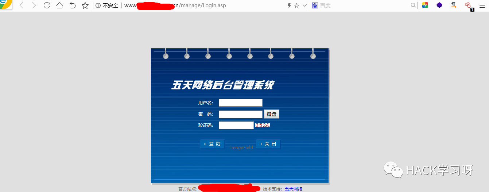
2.3 爬行网站目录
我们简单测试了些常见网站后台地址之后，发现还是不行，现在怎么办呢？这时我们可以考虑下爬行网站目录架构，看看管理员会不会将网站后台放置根目录下。至于爬行网站目录原理可以理解为这样：我们在首页A中存在爬取A的所有URL链接，接着这些爬取URL链接我们可以理解分为B，C，D，E，F……接着继续爬取B ，C， D，E，F网页中的URL链接，层层递进，直到将所有URL链接爬行完成。对于爬行网站目录，我们可以通过以下工具来进行爬行获取。
Burpsuite爬行网站
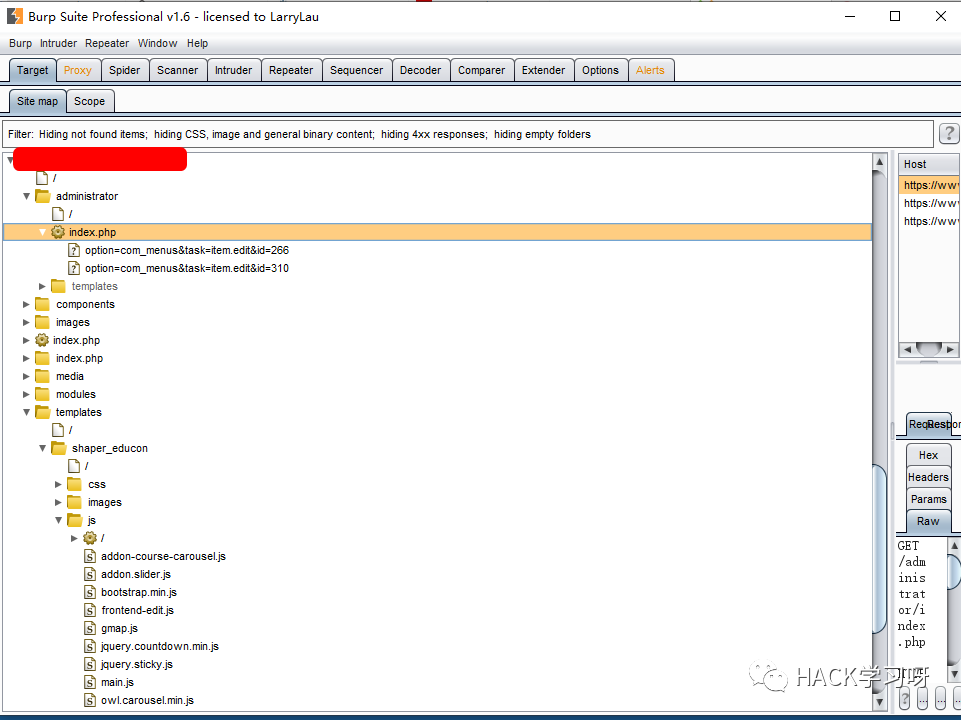
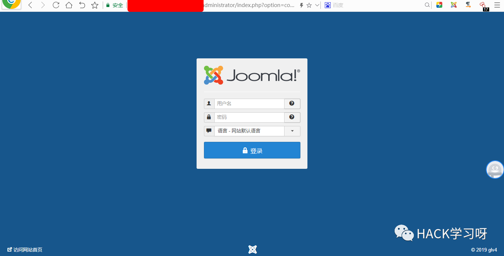
AVWS爬行网站
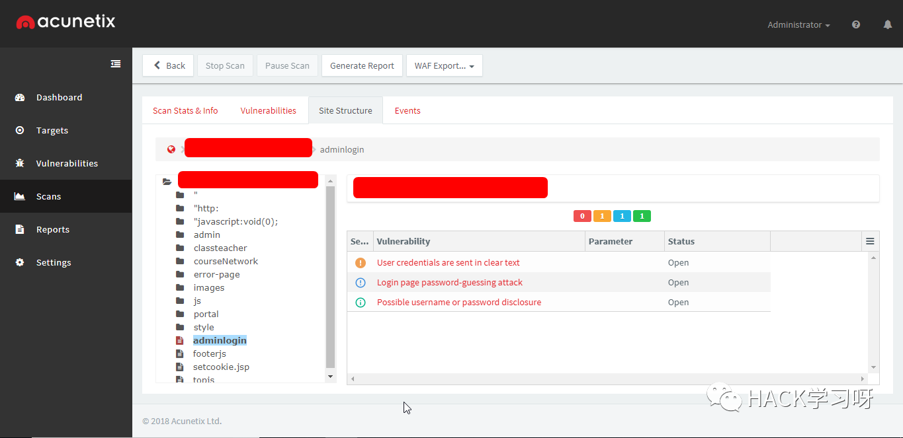
AppScan 爬行网站
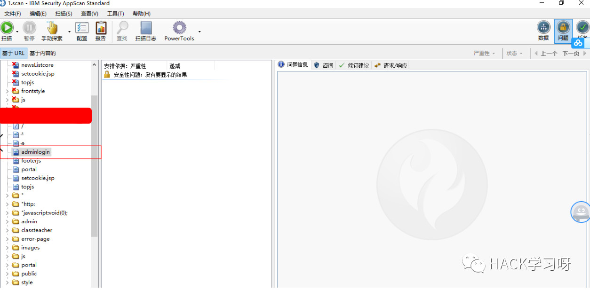
2.4 字典爆破后台路径
而当我们进行普通网站爬行成功后，结果点击发现目录中又没有我们想要网站后台地址。也许这后台地址并没有像我们想象中被放置链接中或者爬行深度不够等等原因。这时爬行目录不行的话，我们还可以另行途径，尝试用后台字典来爆破后台地址。这里我推荐几个常用的扫描目录工具。（扫描目录原理：利用字典匹配的网页地址进行目录扫描，根据网页返回的HTTP状态码进行识别确认）
御剑后台扫描超强85w字典
链接：https://pan.baidu.com/s/1y3vEMEkQQiErs5LeujWZ-A 提取码：3e1b
御剑WEB目录扫描优化版
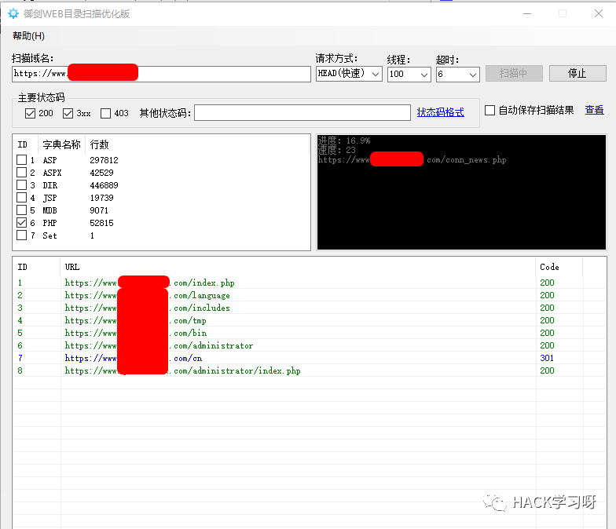
dirsearch 目录扫描工具
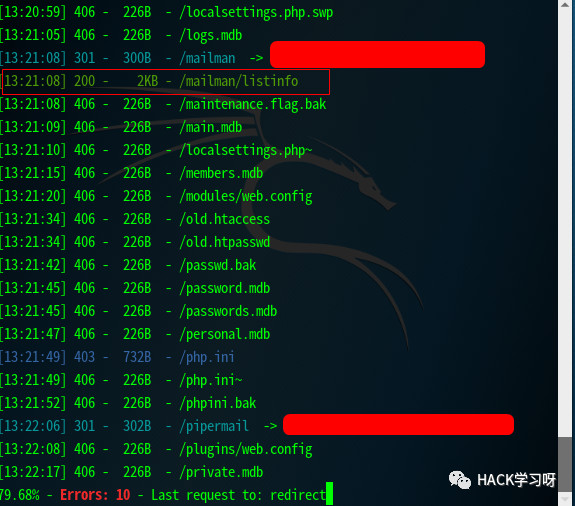
2.5 备份文件信息泄露
网站备份文件泄露指管理员误将网站备份文件或存放在某个网站目录下(如我们常见的 web.xml 、.bak、.sql、.txt、.swp等 )。我们可以下载这些备份文件，查看网站文件的敏感信息。因为备份文件信息泄露的种类很多，在此我就不在此一一例举出来。
这里就贴个网站链接给大家学习参考：https://blog.csdn.net/fly_hps/article/details/82821857
2.6 利用搜索引擎语法查找
除了针对当前网站后台地址爆破测试，我们还可以通过各大网站搜索引擎语言进行信息后台地址收集，这里重点介绍goolehack。同时goolehack语法“博大精深”，所以在这里我只介绍一些常见帮助我们查找后台的语法啦~~~感兴趣的朋友可以另外查询资料拓展学习。
Goolehack语法
Intext 正文中出现关键字的网页site 网站域名Intitle 标题中出现关键字的网页Info 一些基本信息包含关键字的网页Inurl url中存在关键字的网页Filetype 指定文件类型搜索网站后台地址
site:目标网站 intitle:管理/后台/登陆/管理员
site:目标网站 inurl:login/admin/guanlidenglu
site: 目标网站 intext: 管理/后台/登陆/管理员
搜索网站敏感信息
intitle:”Index of” .sh_history
intitle:”index of” etc/shadow
intitle:”index of” spwd
inurl:service.pwd
搜索网站特定文件
site:目标网站 filetype:doc
site:目标网站 filetype:xls
site:目标网站 filetype:pdf
三、后台放置其他站点页面
当我们将上述后台在当前页面查找的方式都是试过一遍时，还是无法找到又该怎么办呢？这是我们就应当换个思路了，也许管理员希望把是将前台和后台地址分开，并没有将后台地址放置到当前页面。所以我们可以通过以下方式尝试去寻找后台地址。
3.1 旁站端口查询
一些管理员往往喜欢把服务器划分一个大于1024的端口，然后单独把网站后台地址放置其中。对于这种情况，我们可以通过扫描网站来获取端口信息，然后逐一对其进行访问浏览，看看会不会后台地址被放置在某个端口的呢。对于端口的扫描，我推荐的是nmap神器。
快速扫描1-65525端口
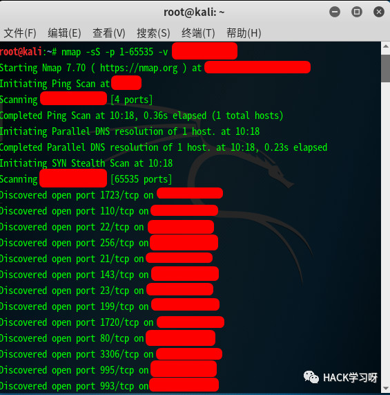
同时我们需要注意的是，因为有些网站你扫描发送的请求过多，会把你ip地址进行禁止访问。这时为保险起见，我们可以使用一个叫shodan插件被动进行端口收集，往往这也是一种不错的效果哟。
shadan插件

后台8080端口登录
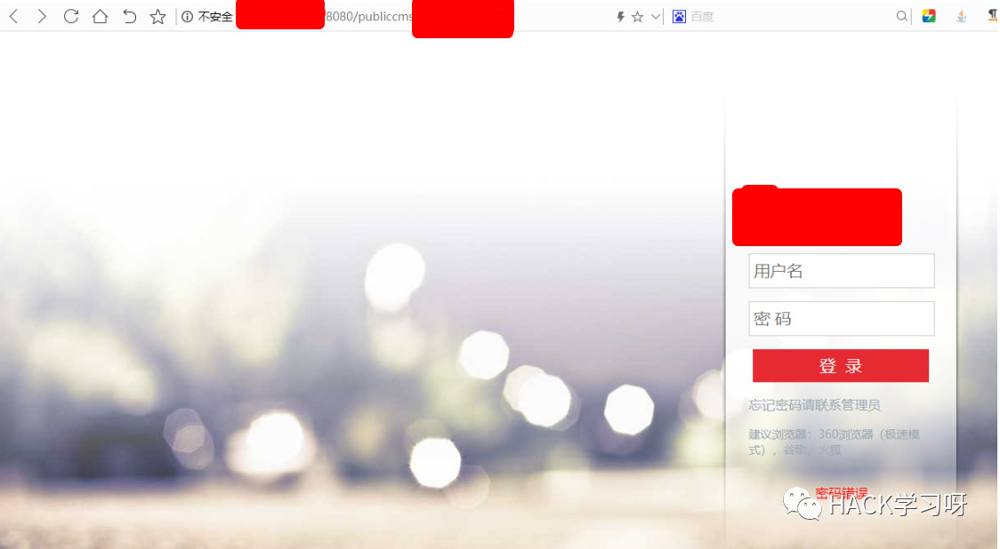
3.2 查找二级域名
当我扫描他的旁站端口没有发现后台地址，这时我们又可以从子域名下手。一些管理员不放心把后台地址放到当前站点页面，就喜欢把后台地址放置到子域名当中。我们可以通过对其子域名收集，说不定里面就有你想要的后台地址信息哟。这里我推荐大家使用这两个Layer和Sublist3r工具。
Sublist3r 工具
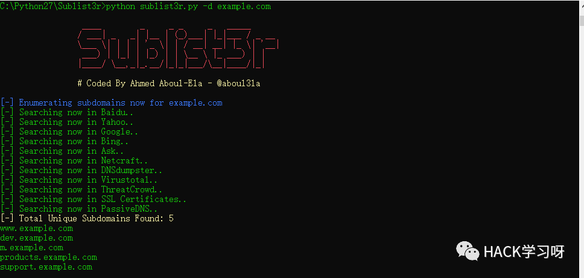
Layer子域名挖掘机5.0最新版
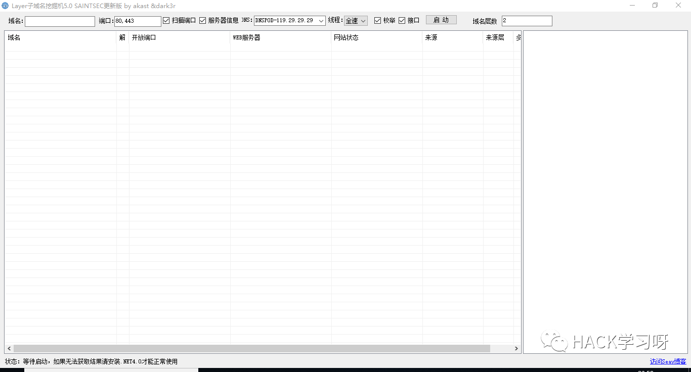
3.3 C段扫描网站
当我们这个网站的后台实在是没有办法找到的话，我们还可以从这个服务器网段的IP地址下手。例如网站地址为：192.168.1.xx,我们则可以从192.168.1.1-192.168.1.254当中查询其他ip地址，从服务器其他ip地址下手看看。虽然很多情况下服务器其他c段中ip地址都是 另外独立不想关的网站，但还是有小部分管理员会把后台网站独立分配一个ip地址给它的。c段扫描网站的工具很多，懒得一一尝试。这里我就贴两个c段在线查询网站给大家。
C段在线查询网站
https://phpinfo.me/bing.php
http://webscan.cc/
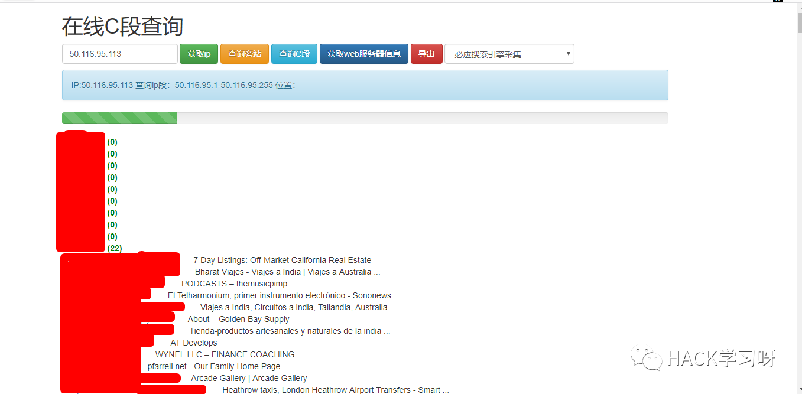
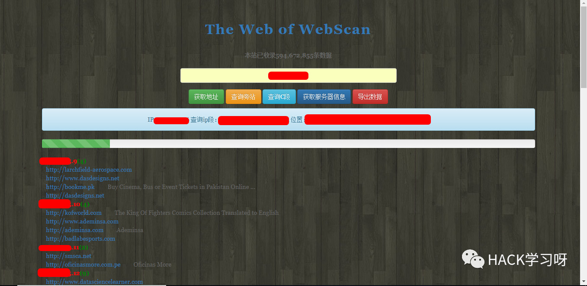
四、后台地址隐藏方式
俗话说：”知己知彼，方可百战百胜。”讲了这么多查找网站后台的方法，现在我就带大家去了解下常见的一般后台地址隐藏方法吧。因为后台地址隐藏方法有很多，所以我就只举两个最常见的方法进行讲解吧。
4.1 自定义网站后台地址
正常的而言，一个上线的企业网站系统，一般是不会轻易的就会被你捕捉到后台地址。而对于后台地址的隐藏，最常见且最有效的就是自定义网站后台地址。例如：默认后台地址为admin/。我们可以自定义修改为abc#%@123。这样攻击者就难以知道修改的后台地址，往往就会难以下手，加大了后台地址查找力度。
4.2 指定后台地址只能某个ip段访问
而后台地址不管放置何处，都会存在被攻击者找到和加以利用的风险。而一些公司就会采取这样的方式，赋予某个ip地址或者ip段权限去访问后台地址，其他ip地址都无法访问该后台地址。**只给管理员或者内部员工进行访问后台地址。**这种设置方式哪怕后台地址被泄漏找到，攻击者都无法进行访问和利用。
五、总结
也许有人会问了，找个后台地址这么复杂的嘛？这样流程去找到了，浪费时间和精力一点都不值得。其实小编上述提供仅仅只是一种后台查找思路。渗透的本质是信息收集，我们不要仅仅局限于后台地址的查找，而是掌握一种信息收集的思路流程。进行信息收集时，我们要学会从方方面面去寻找信息突破口，一步一步地去查找到我们想要的信息。当然啦，如果上述方法你还是没有找到后台地址，就考虑还是另寻方向出路，不要死磕一个点，挂死在一棵树上~~~

文首思维导图下载地址
公众号后台回复：0725
即可获得下载地址